前言
在高考数学的几何题中，几何法较难找出解决方法，但一旦找出，方法往往是最简洁的。本文节选了可以用几何法的部分解析几何题，且其所用几何法均不涉及圆锥曲线的二级结论，学生可在仅掌握初中基本几何知识和圆锥曲线基本定义的情况下，用几何法完成下列题目。
圆锥曲线的光学性质
运用圆锥曲线的光学性质解题，也属于几何法。但这部分内容已单独成章，本文不再赘述。详见历史发文。
中位线
（2019年浙江卷理科第15题）已知椭圆\(\dfrac{x^{2}}{9}+\dfrac{y^{2}}{5}=1\)的左焦点为\(F\)，点\(P\)在椭圆上且在\(x\)轴的上方，若线段\(PF\)的中点在以原点\(O\)为圆心，\(\vert OF\vert\)为半径的圆上，则直线\(PF\)的斜率是___。
解析
答案：\(\sqrt{15}\)。 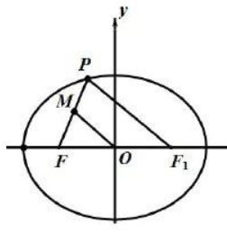
由题意可知\(\vert OF\vert=\vert OM\vert = c = 2\)，由中位线定理可得\(\vert PF\vert\)\(= 2\vert OM\vert = 4\)，
设\(P(x,y)\)，可得\((x - 2)^{2}+y^{2}=16\)，联立方程\(\dfrac{x^{2}}{9}+\dfrac{y^{2}}{5}=1\)，可解得\(x_1 = -\dfrac{3}{2}\)，\(x_2=\dfrac{21}{2}\)。
点\(P\)在椭圆上且在\(x\)轴的上方，求得\(P\left(-\dfrac{3}{2},\dfrac{\sqrt{15}}{2}\right)\)，所以\(k_{PF}=\dfrac{\frac{\sqrt{15}}{2}}{\frac{1}{2}}=\sqrt{15}\)。
（2017年全国II卷第16题）已知\(F\)是抛物线\(C:y^{2}=8x\)的焦点，\(M\)是\(C\)上一点，\(FM\)的延长线交\(y\)轴于点\(N\)。若\(M\)为\(FN\)的中点，则\(\vert FN\vert=\)___。
解析
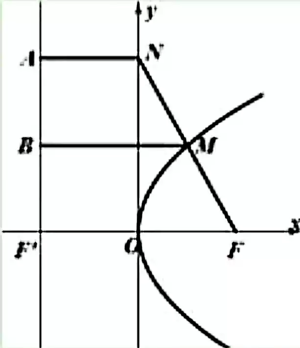
如图所示，不妨设点\(M\)位于第一象限，设抛物线的准线与\(x\)轴交于点\(F'\)，作\(MB\perp l\)于点\(B\)，\(NA\perp l\)于点\(A\)，由抛物线的解析式可得准线方程为\(x = -2\)，则\(AN = 2\)，\(FF' = 4\)。在直角梯形\(ANFF'\)中，中位线\(BM=\dfrac{AN + FF'}{2}=3\)，由抛物线的定义有\(MF = MB = 3\)，结合题意有\(MN = MF = 3\)，故\(\vert FN\vert\)\(=\vert FM\vert+\vert NM\vert\)\(= 3 + 3 = 6\)。
设椭圆\(\dfrac{x^{2}}{3}+y^{2}=m\)\((m\gt0)\)的左焦点为\(F\)，点\(P\)在椭圆上且在第一象限，直线\(PF\)与圆\(x^{2}-y^{2}=r^{2}\)相交于\(A\)，\(B\)两点，若\(A\)，\(B\)是线段\(PF\)的两个三等分点，则直线\(PF\)斜率为___。
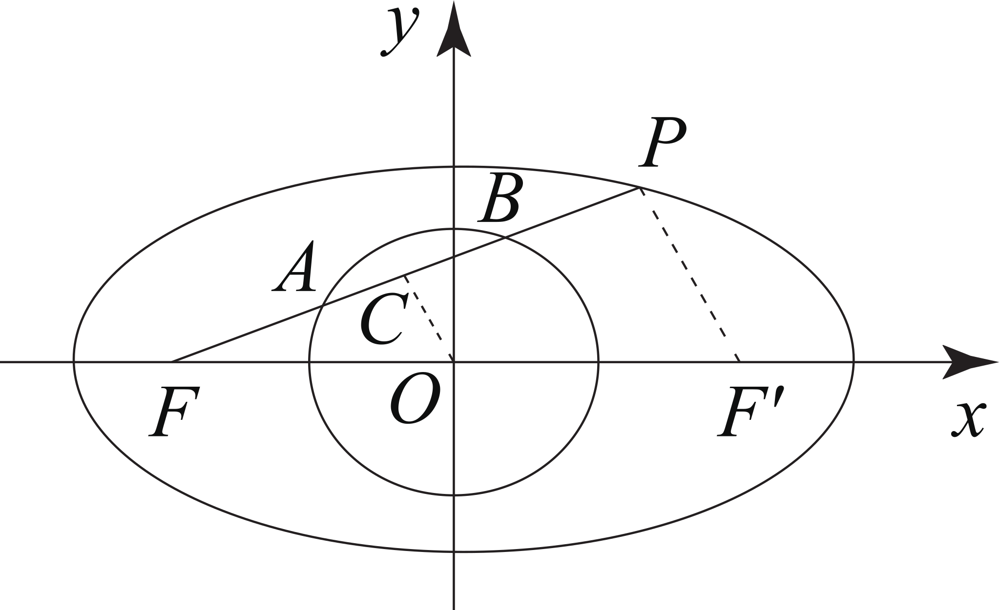
解析
如图所示，取\(AB\)的中点\(C\)，连接\(OC\)，由\(A\)，\(B\)是线段\(PF\)的两个三等分点，可知\(C\)为\(PF\)的中点，因为点\(A\)，\(B\)在圆上，所以\(OC\perp AB\)。
设点\(F'\)为椭圆的右焦点，连接\(PF'\)，根据三角形中位线性质可得\(OC\text{//} PF'\)，则有\(PF\perp PF'\)。
设\(\vert PF\vert = p\)，\(\vert PF'\vert = q\)，结合\(a=\sqrt{3m}\)，\(b=\sqrt{m}\)，\(c=\sqrt{2m}\)，由椭圆的定义得\(p + q = 2a = 2\sqrt{3m}\)。
在\(\text{Rt}\triangle PFF'\)中，\(p^{2}+q^{2}=4c^{2}=8m\)，结合\(p + q = 2\sqrt{3m}\)，得\(pq = 2m\)。设点\(P(x_{P},y_{P})\)\((x_{P}\gt0,y_{P}\gt0)\)，则\(S_{\triangle PFF'}\)\(=\dfrac{1}{2}\vert PF\vert\cdot\vert PF'\vert\)\(=\dfrac{1}{2}\vert FF'\vert\cdot y_{P}\)，即\(\dfrac{1}{2}pq=\dfrac{1}{2}\times2c\times y_{P}\)，可得\(y_{P}=\dfrac{\sqrt{2m}}{2}\)，代入椭圆方程可得\(x_{P}=\dfrac{\sqrt{6m}}{2}\)，则直线\(PF\)的斜率为\(\dfrac{\dfrac{\sqrt{2m}}{2}-0}{\dfrac{\sqrt{6m}}{2}+\sqrt{2m}}=2-\sqrt{3}\)。
(2019年全国I卷理科第16题)已知双曲线\(C:\dfrac{x^{2}}{a^{2}}-\dfrac{y^{2}}{b^{2}} = 1\)\((a\gt0,b\gt0)\)的左、右焦点分别为\(F_1\)，\(F_2\)，过\(F_1\)的直线与\(C\)的两条渐近线分别交于\(A\)，\(B\)两点。若\(\overrightarrow{F_1A}=\overrightarrow{AB}\)，\(\overrightarrow{F_1B}\cdot\overrightarrow{F_2B}=0\)，则\(C\)的离心率为___。
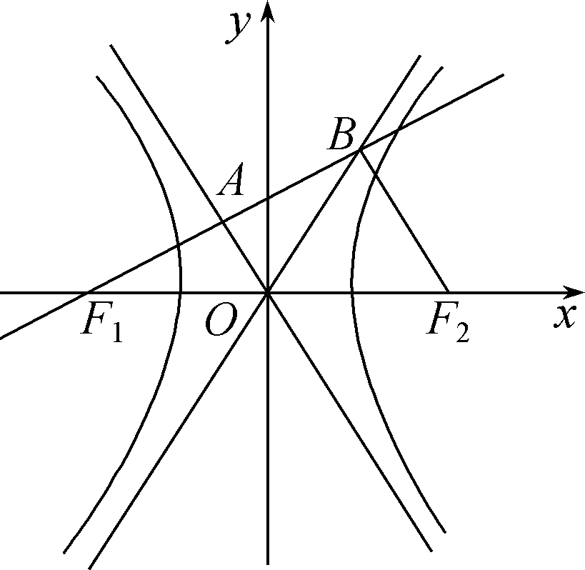
解析
由\(\overrightarrow{F_1A}=\overrightarrow{AB}\)，得\(A\)为\(F_1B\)的中点，
又\(O\)为\(F_1F_2\)的中点，则\(OA\text{//} F_2B\)。
\(\overrightarrow{F_1B}\cdot\overrightarrow{F_2B}=0\)，得\(F_1B\perp F_2B\)，\(OA\perp F_1A\)，则\(\angle F_1OA=\angle BOA\)。
结合双曲线的对称性得\(\angle F_1OA\)\(=\angle BOA\)\(=\angle BOF_2 = 60^{\circ}\)，所以渐近线\(OB\)的斜率为\(\dfrac{b}{a}=\tan60^{\circ}=\sqrt{3}\)，
从而\(e=\dfrac{c}{a}\)\(=\sqrt{1+(\dfrac{b}{a})^2}\)\(=\sqrt{1+(\sqrt{3})^2}=2\)。
相似三角形
若\(AB\)为过抛物线\(y^{2}=4x\)焦点\(F\)的弦，\(O\)为坐标原点，且\(\angle OFA = 135^{\circ}\)，\(C\)为抛物线准线与\(x\)轴的交点，则\(\angle ACB\)的正切值为（ ）。
A.\(2\sqrt{2}\)；B.\(\dfrac{4\sqrt{2}}{5}\)；C.\(\dfrac{4\sqrt{2}}{3}\)；D.\(\dfrac{2\sqrt{2}}{3}\)。
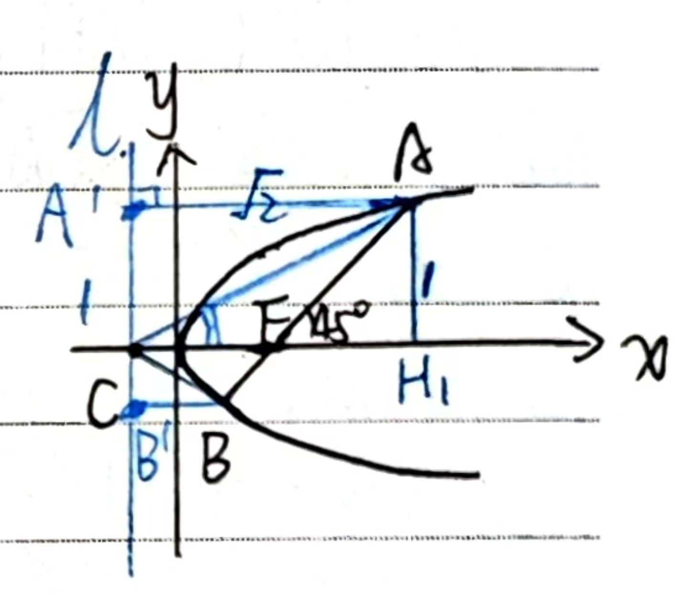
解析法
焦点\(F(1,0)\)，\(C(-1,0)\)，\(AB\)方程\(y = x - 1\)，与抛物线方程\(y^{2}=4x\)联立，
解得\(A(3 + 2\sqrt{2},2 + 2\sqrt{2})\)，\(B(3 - 2\sqrt{2},2 - 2\sqrt{2})\)，
于是\(k_{CA}=\dfrac{2 + 2\sqrt{2}}{4 + 2\sqrt{2}}=\dfrac{\sqrt{2}}{2}\)，\(k_{CB}=\dfrac{2 - 2\sqrt{2}}{4 - 2\sqrt{2}}=-\dfrac{\sqrt{2}}{2}\)，
\(\tan\angle ACB\)\(=\dfrac{k_{CA}-k_{CB}}{1 + k_{CA}k_{CB}}\)\(=\dfrac{\frac{\sqrt{2}}{2}-\left(-\frac{\sqrt{2}}{2}\right)}{1+\frac{\sqrt{2}}{2}\times\left(-\frac{\sqrt{2}}{2}\right)}\)\(=2\sqrt{2}\)，
答案 A。
几何法
\(AF=AA_1\)\(=\sqrt{2}AH_1\)
\(\therefore \tan \angle ACF=\dfrac{1}{\sqrt{2}}=\dfrac{\sqrt{2}}{2}\)
\(\because \triangle AA_1C \sim \triangle BB_1C\),
\(\therefore \tan \angle ACB=\tan 2\angle ACF\)\(=\dfrac { 2\frac{1}{\sqrt{2} } } { 1 - \left({\frac{1}{\sqrt{2}}}\right)^2}\)\(=2\sqrt{2}\)
如图所示，已知椭圆\(C:\dfrac{x^{2}}{a^{2}}+\dfrac{y^{2}}{b^{2}} = 1\)\((a\gt b\gt0)\)的离心率为\(\dfrac{\sqrt{2}}{2}\)，点\(P(0,1)\)和点\(A(m,n)\)\((m \neq 0)\)都在椭圆\(C\)上，直线\(PA\)交\(x\)轴于点\(M\)。
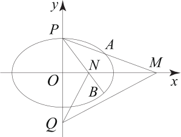
(1)求椭圆\(C\)的方程和点\(M\)的坐标(用\(m\)，\(n\)表示)；
(2)设\(O\)为原点，点\(B\)与点\(A\)关于\(x\)轴对称，直线\(PB\)交\(x\)轴于点\(N\)，则\(y\)轴上是否存在点\(Q\)，使\(\angle OQM=\angle ONQ\)？若存在，求出\(Q\)点坐标；若不存在，说明理由。
解析
(1)椭圆\(C\)的方程为\(\dfrac{x^{2}}{2}+y^{2}=1\)，点\(M\)的坐标为\((\dfrac{m}{1 - n},0)\)（求解过程略）。
(2)由题意可得\(B(m,-n)\)，设点\(N(x_{N},0)\)，
因为\(\overrightarrow{PN}\)与\(\overrightarrow{PB}\)共线，所以\(x_{N}=\dfrac{m}{1 + n}\)，
即点\(N(\dfrac{m}{1 + n},0)\)，
由题意可知\(\angle OQM=\angle ONQ\)等价于\(\text{Rt}\triangle ONQ\sim \text{Rt}\triangle OQM\)，
所以\(\dfrac{\vert OM\vert}{\vert OQ\vert}=\dfrac{\vert OQ\vert}{\vert ON\vert}\)。
设点\(Q(0,y_{Q})\)，由\(\vert OQ\vert^{2}=\vert OM\vert\cdot\vert ON\vert\)，
得\(y_{Q}^{2}\)\(=\dfrac{m}{1 - n}\cdot\dfrac{m}{1 + n}=2\)，
所以\(y_{Q}=\sqrt{2}\)或\(-\sqrt{2}\)，
故点\(Q\)为\((0,\sqrt{2})\)或\((0,-\sqrt{2})\)。
等腰/等边三角形
(2019年江苏卷第17题)如图，在平面直角坐标系\(xOy\)中，椭圆\(C:\dfrac{x^{2}}{a^{2}}+\dfrac{y^{2}}{b^{2}} = 1\)\((a\gt b\gt0)\)的焦点为\(F_1(-1,0)\)，\(F_2(1,0)\)。过\(F_2\)作\(x\)轴的垂线\(l\)，在\(x\)轴的上方，\(l\)与⊙\(F_2:(x - 1)^{2}+y^{2}=4a^{2}\)交于点\(A\)，与椭圆\(C\)交于点\(D\)。联结\(AF_1\)并延长交⊙\(F_2\)于点\(B\)，联结\(BF_2\)交椭圆\(C\)于点\(E\)，联结\(DF_1\)。已知\(DF_1=\dfrac{5}{2}\)。
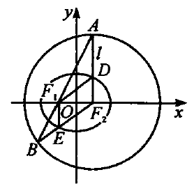
(I)求椭圆\(C\)的标准方程；
(II)求点\(E\)的坐标。
解析
由(1)知椭圆方程为\(\dfrac{x^{2}}{4}+\dfrac{y^{2}}{3}=1\)。
如图，连接\(EF_1\)。由于\(BF_2 = 2a\)，\(EF_1 + EF_2 = 2a\)，所以\(EF_1 = EB\)，故\(\angle B=\angle BF_1E\)。又\(BF_2 = AF_2\)，所以\(\angle B=\angle BAF_2\)，故有\(\angle BF_1E=\angle BAF_2\)，所以\(EF_1\text{//} AF_2\)，故\(EF\perp x\)轴，所以点\(E(-1,-\dfrac{3}{2})\)。
如图所示，\(F\)是椭圆\(\dfrac{x^{2}}{a^{2}}+\dfrac{y^{2}}{b^{2}} = 1\)\((a\gt b\gt0)\)的右焦点，直线\(y=\sqrt{3}x\)与椭圆\(M\)相交，交点为\(A\)、\(B\)且\(AF\perp BF\)，求\(M\)的离心率。
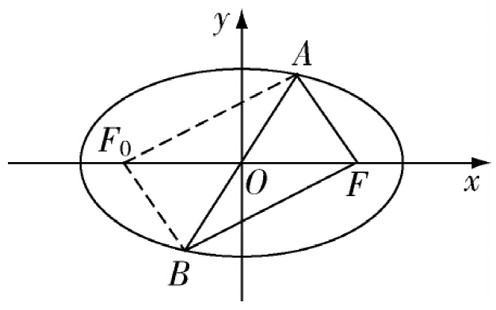
解析
设椭圆\(M\)的左焦点为\(F_0\)，连接\(AF_0\)、\(BF_0\)，则四边形\(AFBF_0\)为平行四边形。
因为\(AF\perp BF\)，所以四边形\(AFBF_0\)为矩形。
因为直线\(AB\)的斜率是\(\sqrt{3}\)，所以\(\angle AOF = 60^{\circ}\)。
在\(\text{Rt}\triangle AF_0F\)中，\(\vert AO\vert\)\(=\vert OF\vert\)\(=\dfrac{1}{2}\vert F_0F\vert\)，所以\(\triangle FOA\)为正三角形。
所以\(\angle AFO = 60^{\circ}\)，\(\vert AF\vert=\vert OF\vert = c\)。
在\(Rt\triangle BAF_0\)中，因为\(\vert AF\vert = c\)，\(\vert F_0F\vert = 2c\)，所以\(\vert AF_0\vert=\sqrt{3}c\)。
根据椭圆定义可得\(2a=\vert AF_0\vert+\vert AF\vert=\sqrt{3}c + c\)，则离心率\(e=\dfrac{c}{a}=\dfrac{2}{\sqrt{3}+1}=\sqrt{3}-1\)。
三角形内角平分线
三角形内角平分线定理
如图，在\(\triangle ABC\)中，\(AD\)交\(BC\)于点\(D\)。\(AD\)平分\(\angle BAC\)\(\Leftrightarrow \dfrac{|DB|}{|DC|}=\dfrac{|AB|}{|AC|}\)。
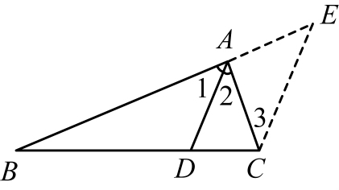
正向证明：作\(CE\text{//} AD\)交\(BA\)的延长线于点\(E\)，所以\(\dfrac{|DB|}{|DC|}=\dfrac{|AB|}{|AE|}\)，因为\(CE\text{//} AD\)，所以\(\angle1=\angle E\)，\(\angle2=\angle3\)。又因为\(\angle1=\angle2\)，所以\(\angle E=\angle3\)，所以\(AE = AC\)，因此\(\dfrac{|DB|}{|DC|}=\dfrac{|AB|}{|AC|}\)。
逆向证明同理。
如图，直线\(AB\)经过双曲线\(\dfrac{x^{2}}{a^{2}}-\dfrac{y^{2}}{b^{2}} = 1\)\((a\gt0,b\gt0)\)的右焦点\(F\)，且与两条渐近线分别交于\(A\)，\(B\)两点，\(AB\perp OB\)，\(\overrightarrow{AF}=2\overrightarrow{FB}\)，求双曲线的离心率。
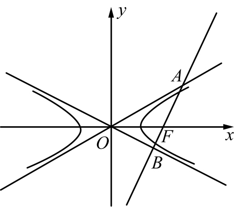
解析
由双曲线的几何性质可得\(\angle AOF=\angle BOF\)，在\(\triangle OAB\)中，由内角平分线定理得\(\dfrac{AF}{FB}=\dfrac{OA}{OB}\)。
又因为\(\overrightarrow{AF}=2\overrightarrow{FB}\)，所以\(\dfrac{AF}{FB}=\dfrac{OA}{OB}=2\)，因为\(AB\perp OB\)，\(\triangle OAB\)为直角三角形。
所以\(\angle OAB = 30^{\circ}\)，所以\(\angle AOF=\angle BOF = 30^{\circ}\)，所以在\(\text{Rt}\triangle OFB\)中，\(OF = 2FB\)。
又因为\(OF = c\)，\(FB = b\)，所以\(c = 2b\)，又因为\(c^{2}=a^{2}+b^{2}\)，所以\(e=\dfrac{c}{a}=\dfrac{2\sqrt{3}}{3}\)。
如图，\(F\)是双曲线\(\dfrac{x^{2}}{a^{2}}-\dfrac{y^{2}}{b^{2}} = 1\)\((a\gt0,b\gt0)\)的右焦点，直线\(L\)是双曲线的右准线，直线\(AP\)分别交双曲线于\(A\)，\(P\)两点，交右准线\(L\)于\(M\)点。求证：\(FM\)平分\(\angle AFP\)。
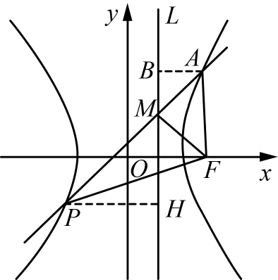
证明
作\(AB\perp L\)于\(B\)，作\(PH\perp L\)于\(H\)（如图），因为直线\(AP\)交准线于\(M\)点，所以\(\triangle MAB\sim\triangle MPH\)，则\(\dfrac{|AB|}{|PH|}=\dfrac{|AM|}{|PM|}\)。①
由双曲线准线定义可知：\(\dfrac{|AF|}{|AB|}=\dfrac{|PF|}{|PH|}=e\)，所以上式变形得\(\dfrac{|AB|}{|PH|}=\dfrac{|AF|}{|PF|}\)。②
由①②得\(\dfrac{|AM|}{|PM|}=\dfrac{|AF|}{|PF|}\)，由三角形内角平分线定理的逆定理可得：\(FM\)平分\(\angle AFP\)。
最值相关
已知\(A(-1,0)\)，\(B(3,0)\)，\(P\)是圆\(O:\)\(x^{2}+y^{2}=45\)上的一个动点，则\(\sin\angle APB\)的最大值为（）。
(A)\(\dfrac{\sqrt{3}}{3}\)。(B)\(\dfrac{\sqrt{5}}{3}\)。(C)\(\dfrac{\sqrt{3}}{4}\)。(D)\(\dfrac{\sqrt{5}}{4}\)。
解析
在\(\triangle APB\)中，\(r\)为\(\triangle APB\)的外接圆半径。
若要使\(\sin\angle APB\)最大，则\(r\)要最小，又\(A\)，\(B\)两点在圆\(O\)内，\(P\)在圆\(O\)上，所以当\(\triangle APB\)的外接圆和圆\(O\)内切时，\(r\)最小。
此时可设外接圆的圆心为\((1,m)\)，则\(\sqrt{1+m^{2}}=3\sqrt{5}-r\)，且\(r=\sqrt{4+m^{2}}\)，代入解得\(m^{2}=\dfrac{44}{5}\)，所以\(r=\dfrac{8}{\sqrt{5}}\)。
所以\(\sin\angle APB\)的最大值为\(\dfrac{2}{r}=\dfrac{\sqrt{5}}{4}\)。
已知\(P\)是以\(F_1\)，\(F_2\)为左、右焦点的椭圆\(\dfrac{x^{2}}{a^{2}}+\dfrac{y^{2}}{b^{2}} = 1\)\((a\gt b\gt0)\)上一点，若\(\angle F_1PF_2 = 120^{\circ}\)，则该椭圆的离心率的取值范围是___。
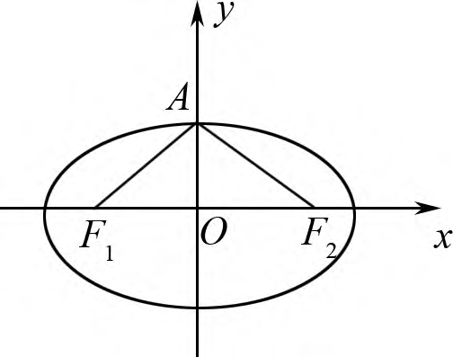
解析
根据椭圆图形的几何性质，可知当点\(P\)为椭圆的短轴顶点（不妨设上顶点为\(A\)）时\(\angle F_1PF_2\)最大。
由于存在点\(P\)为椭圆上的一点，使得\(\angle F_1PF_2 = 120^{\circ}\)，所以在\(\triangle AF_1F_2\)中，\(\angle F_1AF_2\geq120^{\circ}\)，那么在\(\text{RT}\triangle AOF_2\)中，\(\angle OAF_2\geq60^{\circ}\)。
结合三角函数的定义有：\(e=\dfrac{c}{a}=\sin\angle OAF_2\geq\sin60^{\circ}\)\(=\dfrac{\sqrt{3}}{2}\)，又\(0\lt e\lt1\)，则有\(\dfrac{\sqrt{3}}{2}\leq e\lt1\)，即该椭圆的离心率的取值范围是\(\left[\dfrac{\sqrt{3}}{2},1\right)\)。
双曲线\(\dfrac{x^{2}}{a^{2}}-\dfrac{y^{2}}{b^{2}} = 1\)\((a\gt0,b\gt0)\)的渐近线为正方形\(OABC\)的边\(OA\)，\(OC\)所在的直线，点\(F(\sqrt{2},0)\)为该双曲线的右焦点，若过点\(F\)的直线与直线\(OA\)，\(OC\)分别相交于\(M\)，\(N\)两点，则\(\triangle OMN\)内切圆半径的最大值为___。
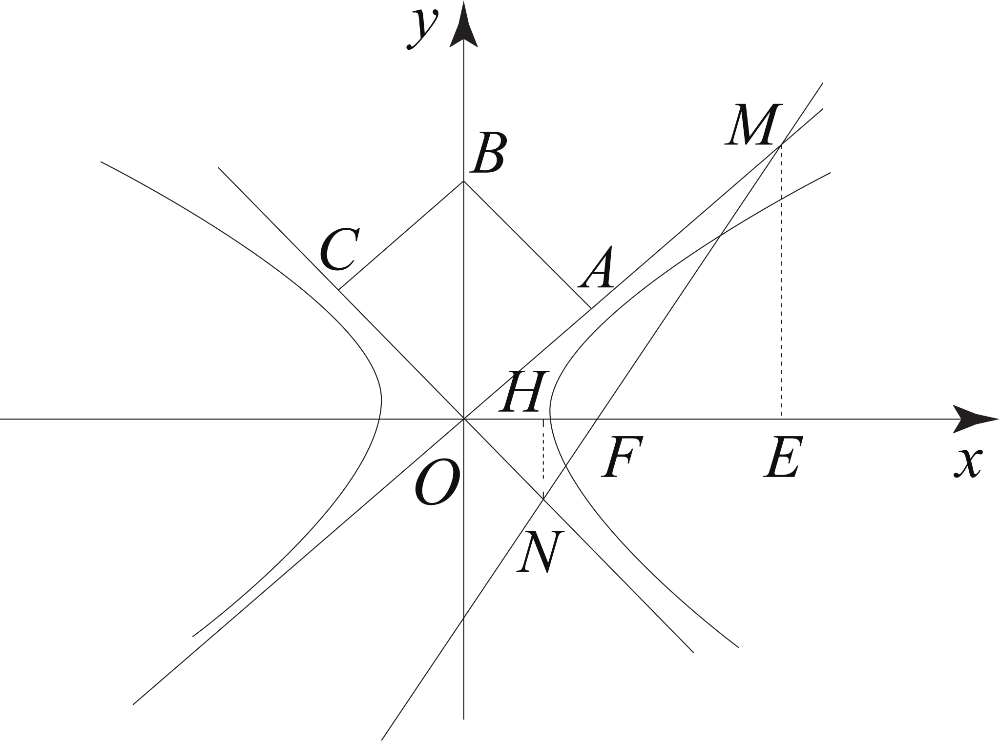
解析
如图所示，由题意得\(\angle AOF=\angle AOB = 45^{\circ}\)，过\(M\)，\(N\)向\(x\)轴作垂线，垂足分别为\(E\)，\(H\)。
设\(\vert OM\vert = m\)，\(\vert ON\vert = n\)，所以\(\vert ME\vert=\dfrac{\sqrt{2}}{2}m\)，\(\vert NH\vert=\dfrac{\sqrt{2}}{2}n\)，
因为\(S_{\triangle OMN}=\)\(\dfrac{1}{2}mn\)\(=\dfrac{1}{2}\times\dfrac{\sqrt{2}}{2}\times\sqrt{2}m+\dfrac{1}{2}\times\sqrt{2}\times\dfrac{\sqrt{2}}{2}n\)，所以\(mn = m + n\)，
又因为\(m + n\geq2\sqrt{mn}\)，所以\(mn\geq4\)（当且仅当\(m = n = 2\)时，等号成立）。\(\text{Rt}\triangle OMN\)的内切圆半径为\(r=\dfrac{\vert OM\vert+\vert ON\vert-\vert MN\vert}{2}\)\(=\dfrac{mn-\sqrt{(mn)^{2}-2mn}}{2}\)，
令\(t = mn\)，\(t\geq4\)，
则\(r=\dfrac{t-\sqrt{t^{2}-2t}}{2}\)\(=\dfrac{t}{t+\sqrt{t^{2}-2t}}\)\(=\dfrac{1}{1+\sqrt{1-\dfrac{2}{t}}}\)，
令\(f(t)=\dfrac{1}{1+\sqrt{1-\dfrac{2}{t}}}(t\geq4)\)，则\(f(t)\)在\([4,+\infty)\)上单调递减，\(f_{\max}(t)=f(4)=2-\sqrt{2}\)，
所以当\(mn = 4\)时，\(r\)取得最大值为\(2-\sqrt{2}\)。
(2019年全国II卷文科第20题)已知\(F_1\)，\(F_2\)是椭圆\(C:\dfrac{x^{2}}{a^{2}}+\dfrac{y^{2}}{b^{2}} = 1\)\((a\gt b\gt0)\)的两个焦点，\(P\)为\(C\)上一点，\(O\)为坐标原点。
(1)若\(\triangle POF_2\)为等边三角形，求\(C\)的离心率；
(2)如果存在点\(P\)，使得\(PF_1\perp PF_2\)，且\(\triangle F_1PF_2\)的面积等于 16，求\(b\)的值和\(a\)的取值范围。
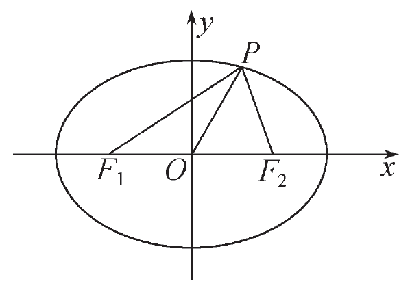
解析
(1)如图，连结\(PF_1\)，由\(\vert PF_2\vert=\vert OP\vert\)\(=\vert OF_2\vert\)\(=\vert OF_1\vert = c\)可知\(\angle F_1PF_2 = 90^{\circ}\)，\(\vert PF_1\vert=\sqrt{3}c\)，因此\(\vert PF_1\vert+\vert PF_2\vert=(\sqrt{3}+1)c = 2a\)，
故\(C\)的离心率是\(e=\dfrac{c}{a}=\sqrt{3}-1\)。
(2)若满足条件的点\(P\)存在，则在\(\text{Rt}\triangle F_1PF_2\)中，\(\vert PF_1\vert+\vert PF_2\vert = 2a\)，\(\dfrac{1}{2}\vert PF_1\vert\cdot\vert PF_2\vert = 16\)，\(\vert PF_1\vert^{2}+\vert PF_2\vert^{2}=\vert F_1F_2\vert^{2}\)，得\((2a)^{2}-64=(2c)^{2}\)，\(b^{2}=16\)，所以\(b = 4\)。
由椭圆的性质可知，当\(P\)为椭圆短轴的端点时\(\angle F_1PF_2\)最大，由此可先预估答案，再详细证明：
在\(\text{Rt}\triangle F_1PF_2\)中，设\(\vert PF_1\vert = x\)，由椭圆的定义及勾股定理得\(x^{2}+(2a - x)^{2}\)\(=4(a^{2}-b^{2})\)，得\(x^{2}-2ax + 32 = 0\)，则关于\(x\)的方程有大于零的实根当且仅当\(\Delta = 4a^{2}-128\geq0\)，可得\(a\geq4\sqrt{2}\)。
参考文献
- 肖旭平.思想方法够丰富,解题思路才出众——以一道高三数学模拟题为例[J].数理天地(高中版),2023,(21):24-25.
- 高双云.离心率取值范围的破解策略[J].数理天地(高中版),2024,(17):2-3.
- 何荣.用平面几何性质解答圆锥曲线问题的应用思路分析[J].高中数理化,2022,(21):43-44.
- 吴志坚,童嘉森.巧用平面几何图形特征降低解析几何运算量——以2019年高考全国卷圆锥曲线试题为例[J].中学生数学,2020,(17):48-50.
- 陈秀群.用平面几何方法妙解圆锥曲线问题[J].中学数学教学参考,2020,(15):62-63.
- 秦桂芳.三角形内角平分线定理在圆锥曲线中的应用[J].高中数理化,2019,(18):10.


发表您的看法